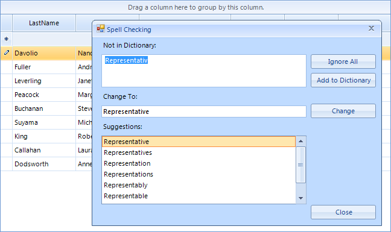

SpellChecking RadGridView
RadSpellChecker is not limited to checking only simple text-editing controls such as RadTextBox. It can spellcheck
editors in more complex controls such as RadGridView as well.
A sample scenario scenario: the end-user types something in
RadTextBoxEditor in RadGridView and tries to commit the typed text in the cell.
This is the place where RadSpellChecker should appear and correct the misspelled words.
After a confirmation given by the end-user
on the RadSpellChecker form, the editor should close and the corrected values should be
committed to the edited cell.
Supposing that we have a RadGridView filled with data and a RadSpellChecker on the form,
the following steps demonstrate how to implement the given scenario:
- Let's subscribe to CellValidating event. This event is fired when the edited cell should be validated before the editor for that particular cell is closed. In this event we should call the Check method of the RadSpellChecker passing the currently opened editor:
[C#]
string correctedValue = String.Empty;
void radGridView1_CellValidating(object sender, Telerik.WinControls.UI.CellValidatingEventArgs e)
{
RadTextBoxEditor editor = e.ActiveEditor as RadTextBoxEditor;
if (editor != null)
{
RadTextBoxEditorElement element = editor.EditorElement as RadTextBoxEditorElement;
this.radSpellChecker1.Check(element.TextBoxItem.HostedControl);
correctedValue = e.ActiveEditor.Value.ToString();
}
}
[VB.NET]
Dim correctedValue As String = String.Empty
Private Sub RadGridView1_CellValidating(ByVal sender As Object, ByVal e As Telerik.WinControls.UI.CellValidatingEventArgs) Handles RadGridView1.CellValidating
Dim editor As RadTextBoxEditor = TryCast(e.ActiveEditor, RadTextBoxEditor)
If editor IsNot Nothing Then
Dim element As RadTextBoxEditorElement = TryCast(editor.EditorElement, RadTextBoxEditorElement)
Me.RadSpellChecker1.Check(element.TextBoxItem.HostedControl)
correctedValue = e.ActiveEditor.Value.ToString()
End If
End Sub
Please note that the editor sets the corrected value to the opened editor,
but not directly to the underlying data cell.
We save this editor value in a variable named 'correctedValue'
- Now we should subscribe to the CellEndEdit event which is fired after the editor is closed. In this event we should pass the saved corrected value to the data cell:
[C#]
void radGridView1_CellEndEdit(object sender, GridViewCellEventArgs e)
{
this.radGridView1.CurrentCell.Value = correctedValue;
}
[VB.NET]
Private Sub RadGridView1_CellEndEdit(ByVal sender As Object, ByVal e As Telerik.WinControls.UI.GridViewCellEventArgs) Handles RadGridView1.CellEndEdit
Me.RadGridView1.CurrentCell.Value = correctedValue
End Sub
The following figures provide the end-user experience with RadSpellChecker and RadGridView:
The end-user types 'Sales Representative':

Then the end-user tries to commit the misspelled value by pressing the Enter key. As a consequence, the RadSpellChecker form
is invoked:
-
After the user chooses one of the suggestions and presses the Change button, the RadSpellChecker form disappears,
leaving an informative message box that the spell checking operation is completed: -
The end-user pressed the OK button. Then, the message box disappears, the editor closes and the corrected value
is saved in the cell: